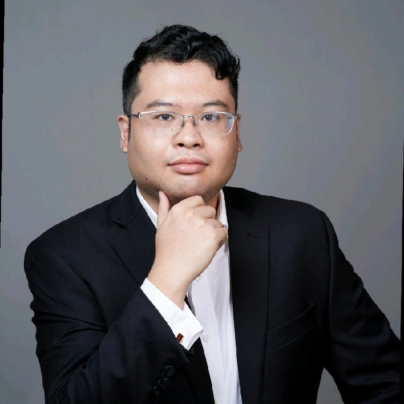

Về Khoa Nguyen

Tóm tắt
Chuyên gia quản lý giàu kinh nghiệm và năng động trong ngành thép, chuyên về chuỗi cung ứng thép cán nóng, PO, mạ kẽm, mạ nhôm kẽm, thép màu, inox và các sản phẩm thép khác cho các lĩnh vực như điện, điện tử, nội thất và công nghiệp nói chung. Có thành tích xuất sắc trong chiến lược kinh doanh, quản lý dự án và lãnh đạo, được hỗ trợ bởi nền tảng IT vững chắc. Các thành tựu đáng chú ý bao gồm đồng sáng lập một liên doanh giữa một tập đoàn hàng đầu của Hàn Quốc và một công ty Việt Nam, đóng góp vào việc thành lập vendor dập Việt Nam đầu tiên tại địa phương của Samsung, và thúc đẩy các chiến lược giúp tăng doanh số nhà máy lên 20% đồng thời cắt giảm đến 50% lỗi sản phẩm.
Kỹ năng hàng đầu
- Lãnh đạo
- Làm việc nhóm
- Quản lý thời gian
Ngôn ngữ
- Tiếng Anh (Chuyên nghiệp)
- Tiếng Việt (Bản ngữ)
Kinh nghiệm
Tháng 6 năm 2025 - Hiện tại
SMC Phu My Precision Co. Ltd
Phú Mỹ, Bà Rịa-Vũng Tàu, Việt Nam
Phó Giám đốc Phát triển Kinh doanh
- Phát triển các nhà cung cấp vendor cấp 2 nội địa
- Phát triển khách hàng mới, mở rộng mảng kinh doanh từ điện lạnh qua các hệ khách hàng điện tử, IoT, automotive
Tháng 1 năm 2025 - Tháng 6 năm 2025 (6 tháng)
SMC Phu My Steel Processing Co.Ltd
Phú Mỹ, Bà Rịa-Vũng Tàu, Việt Nam
Phó Giám đốc Phát triển Kinh doanh
- Phát triển mặt hàng mới, thép inox, thép sillic
- Phát triển nguồn hàng mới từ các nhà cung cấp Trung Quốc, Hàn Quốc, Nhật Bản
- Phát triển mảng kinh doanh mới, hỗ trợ nội địa hoá sản phẩm sử dụng thép có nguồn gốc từ Việt Nam hoặc không phải nguồn gốc Trung Quốc
Tháng 3 năm 2021 - Tháng 1 năm 2025 (3 năm 11 tháng)
VSSC Steel Center LLC
Phú Mỹ, Bà Rịa-Vũng Tàu, Việt Nam
Phó Giám đốc
- Quản lý khách hàng FDI Hàn Quốc lớn nhất về sản xuất tivi, tủ lạnh, máy giặt máy hút bụi tại miền Nam Việt Nam
- Quản lý về XNK về việc sản xuất xuất khẩu, quản lý báo cáo quyết toán
- Quản lý về Logistic, đảm bảo việc giao nhận hàng hoá và tìm kiếm nhà cung cấp dịch vụ với giá cả hợp lý và phải chăng
- Quản lý về HSE, an toàn, môi trường, PCCC
- Chịu trách nhiệm cho việc RnD, cải tiến của nhà máy để tăng năng suất, giảm thiểu lỗi phát sinh
- Phụ trách việc xin Quota Chống Bán Phá Giá để nhập khẩu thép từ Hàn Quốc về và cấp cho chuỗi cung ứng tại Việt Nam
- Phụ trách các vấn đề ngoại giao với các cơ quan nhà nước Việt Nam bao gồm Hải Quan, Ban Quản Lý KCN, Bộ Công Thương v.v
Tháng 1 năm 2018 - Tháng 2 năm 2021 (3 năm 1 tháng)
SMC Steel Co. Ltd (Coil Center)
H. Tân Thành, Tỉnh Bà Rịa-Vũng Tàu, Việt Nam
Trưởng phòng Kinh Doanh: Tháng 8/2019 -> Tháng 2/2021
- Phụ trách gia công cho khách hàng FDI chuyên sản xuất tivi với sản lượng hơn 2,000MT/tháng tương đương 25% sản lượng nhà máy
Chuyên viên Bán hàng: Tháng 1/2018 - Tháng 8/2019
- Phụ trách tìm kiếm khách hàng FDI mới cho hệ thống coil center của SMC
Tháng 8 năm 2014 - Tháng 1 năm 2018 (3 năm 5 tháng)
SMC Trading Investment JSC
396 Ung Văn Khiêm, Phường 25, Quận Bình Thạnh, TP. Hồ Chí Minh
Phó phòng P.XNK: Tháng 9/2017-> Tháng 1/2018 (5 tháng)
- Chuyên kinh doanh xuất khẩu ống thép sang các thị trường như Thái, Campuchia, Châu Âu, Châu Úc. Sản lượng xuất khẩu chiếm đến 30-40% sản lượng nhà máy.
Chuyên viên P.XNK: Tháng 4/2014 ->Tháng 9/2017 (3 năm 2 tháng)
- Phụ trách mua hàng nhập khẩu cho hệ thống SMC để kinh doanh bao gồm hàng mạ màu, hàng mạ kẽm, cán nóng, cán nguội v.v
- Mở rộng mảng kinh doanh mới là mảng xuất khẩu ống thép cho nhà máy liên doanh SENDO.
Giáo dục
Đại học Công nghệ Sydney
Thạc sĩ Công nghệ thông tin, Kinh doanh thông minh (2013-2014)
Cử nhân Khoa học Công nghệ thông tin, Lập trình doanh nghiệp (2009-2012)
Các chứng nhận
- TECH16 Large Language Models for Business with Python Winter 2024-2025 Stanford University
- LLM Engineering: Master AI, Large Language Models & Agents - Udemy 2024
- The Complete Agentic AI Engineering Course - Udemy 2025
About Khoa Nguyen
Summary
Experienced and dynamic management professional in the steel industry, specializing in the supply chain of hot-rolled steel, PO, galvanized, galvalume, pre-painted steel, stainless steel, and other steel products for sectors such as electrical, electronics, furniture, and general industry. Proven track record in business strategy, project management, and leadership, supported by a strong IT background. Notable achievements include co-founding a joint venture between a leading Korean chaebol and a Vietnamese company, contributing to the establishment of Samsung’s first fully local press vendor, and driving strategies that increased factory sales by 20% while reducing product defects by 50%.
Top Skills
- Leadership
- Teamwork
- Time Management
Languages
- English (Professional Working)
- Vietnamese (Native or Bilingual)
Experience
June 2025 - Present
SMC Phu My Precision Co. Ltd
Phú Mỹ, Ba Ria-Vung Tau, Vietnam
Deputy Business Development Director
- Develop local tier-2 vendors
- Develop new customers, expand business from refrigeration to electronics, IoT, automotive customer segments
January 2025 - June 2025 (6 months)
SMC Phu My Steel Processing Co.Ltd
Phú Mỹ, Ba Ria-Vung Tau, Vietnam
Deputy Business Development Director
- Develop new product lines: stainless steel, silicon steel
- Develop new sources of goods from Chinese, Korean, and Japanese suppliers
- Develop new business segments, support localization of steel products originating from Vietnam or non-Chinese sources
March 2021 - January 2025 (3 years 11 months)
VSSC Steel Center LLC
Phú Mỹ, Ba Ria-Vung Tau, Vietnam
Vice President
- Manage the largest Korean FDI client for TV, refrigerator, washing machine, and vacuum cleaner manufacturing in Southern Vietnam
- Manage import/export for production and export, manage settlement reports
- Manage Logistics, ensure goods delivery and receipt, and find service providers with reasonable and affordable prices
- Manage HSE, safety, environment, fire prevention and fighting
- Responsible for RnD and factory improvement to increase productivity and minimize errors
- Responsible for applying for Anti-Dumping Quota to import steel from Korea and supply to the supply chain in Vietnam
- Responsible for external relations with Vietnamese state agencies including Customs, Industrial Zone Management Board, Ministry of Industry and Trade, etc.
January 2018 - February 2021 (3 years 1 month)
SMC Steel Co. Ltd (Coil Center)
H. Tân Thành, Tỉnh Bà Rịa-Vũng Tàu, Vietnam
Sales Manager: August 2019 -> February 2021
- Responsible for processing for FDI customers specializing in TV manufacturing with a volume of over 2,000MT/month, equivalent to 25% of factory output
Sales Executive: January 2018 - August 2019
- Responsible for finding new FDI customers for SMC's coil center system
August 2014 - January 2018 (3 years 5 months)
SMC Trading Investment JSC
396 Ung Van Khiem St, Ward 25, Binh Thanh District, Ho Chi Minh City
Deputy Manager of Import/Export Dept.: September 2017-> January 2018 (5 months)
- Specialized in exporting steel pipes to markets such as Thailand, Cambodia, Europe, Australia. Export volume accounted for 30-40% of factory output.
Import/Export Specialist: April 2014 -> September 2017 (3 years 2 months)
- Responsible for purchasing imported goods for SMC system for business, including pre-painted steel, galvanized steel, hot-rolled, cold-rolled, etc.
- Expanded new business segment: steel pipe export for SENDO joint venture factory.
Education
University of Technology Sydney
Master in IT, Business Intelligent (2013-2014)
Bachelor of Science in Information and Technology, Enterprise Programming (2009-2012)
Certifications
- TECH16 Large Language Models for Business with Python Winter 2024-2025 Stanford University
- LLM Engineering: Master AI, Large Language Models & Agents - Udemy 2024
- The Complete Agentic AI Engineering Course - Udemy 2025
关于阮科
摘要
钢铁业务，包括热轧钢、PO钢、镀锌钢、镀铝锌钢、彩钢、不锈钢等各类钢材。专注于电气、电子、家具、工业等行业钢材产品的供应链。在业务战略、项目管理和领导力方面拥有卓越的往绩，并拥有强大的IT背景。显著成就包括与韩国领先财阀共同创立合资企业，协助建立三星首家完全本地化的压制供应商，以及推动将工厂销售额提高20%同时将产品缺陷减少50%的战略。
经验
2025年6月 - 至今
SMC富美精密有限公司
越南巴地头顿省富美
业务发展副总监
- 开发本地二级供应商
- 开发新客户，将业务从制冷领域扩展到电子、物联网、汽车等客户群体
2025年1月 - 2025年6月 (6个月)
SMC富美钢铁加工有限公司
越南巴地头顿省富美
业务发展副总监
- 开发新产品线：不锈钢、硅钢
- 开发来自中国、韩国、日本供应商的新货源
- 开发新业务板块，支持使用越南或非中国来源钢材产品的本地化
2021年3月 - 2025年1月 (3年11个月)
VSSC钢铁中心有限公司
越南巴地头顿省富美
副总监
- 管理越南南部最大的韩国FDI客户，涉及电视、冰箱、洗衣机和吸尘器制造
- 管理生产出口的进出口，管理结算报告
- 管理物流，确保货物交付和接收，并寻找价格合理且实惠的服务提供商
- 管理HSE，安全、环境，消防
- 负责工厂的研发和改进，以提高生产力并最大程度地减少错误
- 负责申请反倾销配额，从韩国进口钢材并供应给越南的供应链
- 负责与越南国家机构（包括海关、工业区管理委员会、工贸部等）的外交事务
2018年1月 - 2021年2月 (3年1个月)
SMC钢铁有限公司 (钢卷中心)
越南巴地头顿省新城县
销售经理: 2019年8月 -> 2021年2月
- 负责为专注于电视制造的FDI客户提供加工服务，月产量超过2,000吨，相当于工厂产量的25%
销售主管: 2018年1月 - 2019年8月
2014年8月 - 2018年1月 (3年5个月)
SMC贸易投资股份公司
胡志明市平盛区25坊翁文谦街396号
进出口部副经理: 2017年9月 -> 2018年1月 (5个月)
- 专门从事钢管出口业务，出口到泰国、柬埔寨、欧洲、澳大利亚等市场。出口量占工厂产量的30-40%。
进出口专员: 2014年4月 -> 2017年9月 (3年2个月)
- 负责为SMC系统采购进口商品，包括彩涂钢、镀锌钢、热轧、冷轧等
- 拓展新业务板块：SENDO合资工厂的钢管出口业务。
教育背景
悉尼科技大学
信息技术硕士，商业智能 (2013-2014)
信息技术理学学士，企业编程 (2009-2012)
证书
- TECH16 Large Language Models for Business with Python Winter 2024-2025 Stanford University
- LLM Engineering: Master AI, Large Language Models & Agents - Udemy 2024
- The Complete Agentic AI Engineering Course - Udemy 2025
응우옌 코아 소개
요약
열연강판, PO, 아연 도금, 갈바륨, 컬러강판, 스테인리스강 등 다양한 종류의 철강 사업. 전기, 전자, 가구, 산업 등 다양한 산업 분야에서 철강 제품 공급망 전문화. 비즈니스 전략, 프로젝트 관리, 리더십 분야에서 입증된 실적을 보유하고 있으며, 강력한 IT 배경을 가지고 있습니다. 주요 성과로는 한국의 선도적인 재벌과 베트남 기업 간의 합작 투자 설립, 삼성의 첫 완전 현지 프레스 벤더 설립 기여, 공장 매출 20% 증가 및 제품 결함 50% 감소를 이끈 전략 추진 등이 있습니다。
언어
- 영어 (전문 업무 수준)
- 베트남어 (원어민 또는 이중 언어)
경험
2025년 6월 - 현재
SMC 푸미 정밀 유한회사
베트남 바리아붕따우성 푸미
사업 개발 부사장
- 국내 2차 벤더 개발
- 신규 고객 개발, 냉매 분야에서 전자, IoT, 자동차 고객 부문으로 사업 확장
2025년 1월 - 2025년 6월 (6개월)
SMC 푸미 철강 가공 유한회사
베트남 바리아붕따우성 푸미
사업 개발 부사장
- 신규 제품 라인 개발: 스테인리스강, 규소강
- 중국, 한국, 일본 공급업체로부터 신규 상품 소스 개발
- 新사업 부문 개발, 베트남 또는 비중국 원산지 철강 제품 현지화 지원
2021년 3월 - 2025년 1월 (3년 11개월)
VSSC 철강 센터 LLC
베트남 바리아붕따우성 푸미
부사장
- 베트남 남부에서 TV, 냉장고, 세탁기, 진공청소기를 생산하는 최대 규모의 한국 FDI 고객 관리
- 생산 및 수출 관련 수출입 관리, 결산 보고서 관리
- 물류 관리, 합리적이고 저렴한 가격으로 물품 배송 및 수령 보장 및 서비스 제공업체 발굴
- HSE, 안전, 환경, 소방 관리
- 생산성 향상 및 오류 최소화를 위한 공장 R&D 및 개선 책임
- 한국으로부터 철강 수입 및 베트남 공급망 공급을 위한 반덤핑 쿼터 신청 책임
- 세관, 산업 단지 관리 위원회, 산업 통상부 등 베트남 정부 기관과의 대외 관계 책임
2018년 1월 - 2021年2月 (3년 1개월)
SMC 철강 유한회사 (코일 센터)
베트ナム 바리아붕따우성 탄탄현
영업 관리자: 2019년 8월 -> 2021년 2월
- 월 2,000톤 이상, 공장 생산량의 25%에 해당하는 TV 제조 전문 FDI 고객 가공 담당
영업 담당자: 2018年1月 - 2019年8月
- SMC의 코일 센터 시스템을 위한 신규 FDI 고객 발굴 담당
2014년 8월 - 2018년 1월 (3년 5개월)
SMC 무역 투자 JSC
호치민시 빈탄구 25동 웅반키엠 396번지
수출입 부서 부관리자: 2017年9月 -> 2018年1月 (5개월)
- 태국, 柬埔寨, 유럽, 호주 등 시장으로의 강관 수출 전문. 수출량은 공장 생산량의 30-40%를 차지.
수출입 전문가: 2014年4月 -> 2017年9月 (3년 2개월)
- 컬러강판, 아연도금강판, 열연강판, 냉연강판 등 SMC 시스템의 수입 상품 구매 담당
- 新사업 부문 확장: SENDO 합작 공장의 강관 수출 사업.
학력
시드니 공과대학교
IT 석사, 비즈니스 인텔리젠스 (2013-2014)
정보 기술 과학 학사, 기업 프로그래밍 (2009-2012)
자격증
- TECH16 Large Language Models for Business with Python Winter 2024-2025 Stanford University
- LLM Engineering: Master AI, Large Language Models & Agents - Udemy 2024
- The Complete Agentic AI Engineering Course - Udemy 2025
グエン・コアについて
概要
熱延鋼板、PO鋼、亜鉛めっき鋼板、ガルバリウム鋼板、カラー鋼板、ステンレス鋼など、あらゆる種類の鋼材ビジネス。電気、電子、家具、産業など、様々な分野における鋼材製品のサプライチェーンに特化。ビジネス戦略、プロジェクト管理、リーダーシップにおいて実績があり、強力なITバックグラウンドを持っています。特筆すべき成果には、韓国の大手財閥とベトナム企業との合弁事業の共同設立、サムスン初の完全現地プレスベンダーの設立への貢献、工場売上を20%増加させつつ製品欠陥を50%削減する戦略の推進などが含まれます。
言語
- 英語 (ビジネスレベル)
- ベトナム語 (ネイティブまたはバイリンガル)
職務経歴
2025年6月 - 現在
SMCフーミープレシジョン株式会社
ベトナム、バリア・ブンタウ省フーミー
事業開発副ディレクター
- 国内ティア2ベンダーの開発
- 新規顧客の開拓、冷熱分野から電子、IoT、自動車分野の顧客層への事業拡大
2025年1月 - 2025年6月 (6ヶ月)
SMCフーミースチール加工株式会社
ベトナム、バリア・ブンタウ省フーミー
事業開発副ディレクター
- 新製品ラインの開発：ステンレス鋼、ケイ素鋼
- 中国、韓国、日本サプライヤーからの新たな仕入れ先の開拓
- 新事業分野の開拓、ベトナムまたは非中国由来の鋼材製品の現地化支援
2021年3月 - 2025年1月 (3年11ヶ月)
VSSCスチールセンターLLC
ベトナム、バリア・ブンタウ省フーミー
副ディレクター
- ベトナム南部でテレビ、冷蔵庫、洗濯機、掃除機を製造する最大の韓国系FDI顧客管理
- 生産・輸出に関する輸出入管理、決算報告管理
- 物流管理、商品の配送・受領の確保、およびリーズナブルで手頃な価格のサービスプロバイダーの探索
- HSE、安全、環境、防火管理
- 生産性向上とエラー最小化のための工場R&Dおよび改善責任
- 韓国からの鋼材輸入およびベトナムのサプライチェーンへの供給のためのアンチダンピングクォータ申請責任
- 税関、工業団地管理委員会、商工省など、ベトナム国家機関との対外関係責任
2018年1月 - 2021年2月 (3年1ヶ月)
SMCスチール株式会社 (コイルセンター)
ベトナム、バリア・ブンタウ省タンタイン県
営業部長: 2019年8月 -> 2021年2月
- テレビ製造専門のFDI顧客向け加工を担当し、月間2,000トン以上の生産量で、工場生産量の25%に相当
営業担当: 2018年1月 - 2019年8月
- SMCのコイルセンターシステム向けに新規FDI顧客を探す担当
2014年8月 - 2018年1月 (3年5ヶ月)
SMCトレーディングインベストメントJSC
ホーチミン市ビンタイン区25区ウンヴァンキエム通り396号
輸出入部副部長: 2017年9月 -> 2018年1月 (5ヶ月)
- タイ、カンボジア、ヨーロッパ、オーストラリアなどの市場への鋼管輸出を専門。輸出量占工厂产量的30-40%。
輸出入スペシャリスト: 2014年4月 -> 2017年9月 (3年2ヶ月)
- カラー鋼板、亜鉛めっき鋼板、熱延鋼板、冷延鋼板など、SMCシステム向けの輸入商品の購入を担当
- 新しい事業分野の拡大：SENDO合弁工場の鋼管輸出事業。
学歴
悉尼工科大学
情報技術修士，ビジネスインテリジェンス (2013-2014)
情報技術科学学士，企業プログラミング (2009-2012)
資格
- TECH16 Large Language Models for Business with Python Winter 2024-2025 Stanford University
- LLM Engineering: Master AI, Large Language Models & Agents - Udemy 2024
- The Complete Agentic AI Engineering Course - Udemy 2025